Purpose
These examples demonstrate use of the Poisson solver to solve magnetic fields involving arbitrary distributions of current density (j) and magnetic permeability (μ) in space. Both magnetic scalar potential (Ω) and magnetic vector potential (A) approaches are tested, when applicable. For background on theory and applicability, see Magnetic Potential. In the case magnetic scalar potentials Ω, the boundary conditions on Ω and the relative magnetic permeabilities μr through space are fed into the Poisson solver to determine Ω throughout space. The magnetic H-field is then H = - grad Ω, and the B-field is B = (μrμ0) H. In the case of magnetic vector potentials A, the boundary conditions on A, the relative magnetic permeabilities μr through space, and the (free) current densities j are fed into the Poisson solver to determine A throughout space. The magnetic B-field is then B = curl A.
These examples compare the calculated B to theory, both in tables and in plots.
Version Note: these examples utilize upcomming SIMION 8.2 features for magnetic permeability and magnetic vector potential. You can beta test these features using early access mode, which is enabled by the contained Lua programs.
Files in this demo:
- README.html - about this example
- uniform_2dp.iob - uniform magnetic field (2D planar)--simple (no currents or permeable materials).
- current_cylinder_2dp.iob - magnetic field due to infinite cylinder of uniform current (2D planar).
- current_cylinder_2dc.iob - magnetic field due to rotating sphere of uniform charge (2D cylindrical).
- current_sphere_3dp.iob - magnetic field due to rotating sphere of uniform charge (3D).
- mu_cylinder_2dp.iob - magentic field due to permeable cylinder in transverse magnetic field (2D planar)
- mu_sphere_2dc.iob - magentic field due to permeable sphere in transverse magnetic field (2D cylindrical)
- mu_sphere_3dp.iob - magentic field due to permeable sphere in transverse magnetic field (3D planar)
- mu_torus_3dp.iob - magentic field due to permeable torus in transverse magnetic field (3D planar)
- mucurrent_cylinder_2dp.iob - magnetic field due to permeable cylinder with current in transverse magnetic field (2D planar).
- c_magnet_2dp.iob - "C"-magnet in 2D planar symmetry.
- spotential_from_bfield.iob - convert B-field vectors to magnetic scalar potential PA.
- mag_cylinder_2dc.iob - magnetic field due to uniformly magnetized cylinder (2D cylindrical)
- mag_2cylinder_2dc.iob - magnetic field due to two coaxial uniformly magnetized cylinders (2D cylindrical)
- mag_sphere_2dc.iob - magnetic field due to uniformly magnetized sphere (2D cylindrical)
- mag_halbach_cylinder_2dc.iob - magnetic field due to Halbach cylinder (2D cylindrical)
Theory - Uniform field (uniform_2dp.iob)
The "uniform_2dp.iob" example solves for an ideal uniform magnetic field (+x direction) in 2D planar symmetry. This is intended as a simple example to start with, and it involves no current density or permeable materials.
The theoretical magetic field is
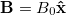
The magnetic scalar potential is
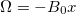
The magnetic vector potential is
Az = B0 y
This can be solved with magnetic scalar potential or magnetic vector potential. In the magnetic scalar potential case, left and right boundaries are Dirichlet boundaries (normal to flux) and bottom and top boundaries are Neumann boundaries (perpendicular to flux). In the magnetic vector potential cases, the reverse is true. The potential difference on the Dirichlet boundaries is set to 100, with ng set to the distance between them (100 mm), thereby giving a 100 Gauss field).
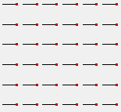
Figure: SIMION-computed magnetic field vectors (black) on X-Y plane.
Theory - Cylinder of Current (current_cylinder_2dp.iob)
We seek to find the B-field of an infinitely long cylinder of current of radius R (doable in 2D planar symmetry). Current density is
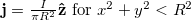
. The theoretical field is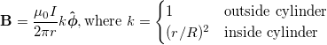
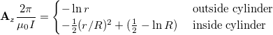
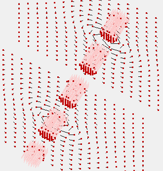
Figure: Current density vectors (pink) and SIMION-computed magnetic field vectors (black) on two planes.
Theory - Sphere of of Rotating Charge (current_sphere_2dc.iob and current_sphere_3dp.iob)
We seek to find the magnetic field from a uniformly charged sphere of total charge Q and radius R, rotating at constant angular velocity ω. This system is taken from Griffiths Problems 5.29/5.58 [1].
The potential and field outside the sphere is
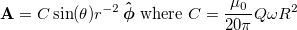
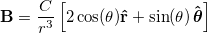
The potential and field inside the sphere is
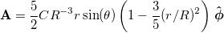
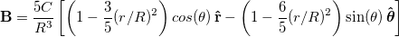
This problem is most efficiently solved in 2D cylindrical symmetry (current_sphere_2dc.iob) but can also be solved in 3D (current_sphere_3dp.iob).
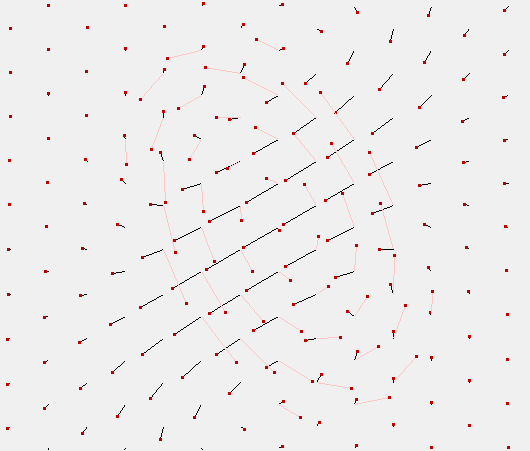
Figure: Current density vectors (pink) in Z=0 plane and SIMION-computed magnetic field vectors (black) in X=0 plane.
Theory - Permeable Sphere in Uniform Field (current_sphere_2dc.iob)
A sphere of permeability μ1 is immersed in a material
μ2 in an otherwise uniform magnetic field  in the +x direction.
This is based on Griffiths Problem 6.18.
In cylindrical coordinates (x, ρ, θ), the magnetic field inside
the sphere is a uniform
in the +x direction.
This is based on Griffiths Problem 6.18.
In cylindrical coordinates (x, ρ, θ), the magnetic field inside
the sphere is a uniform
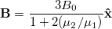
Given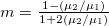
, the magnetic field outside the sphere is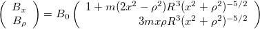
The magnetic scalar potential [2] is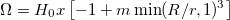
The magnetic vector potential is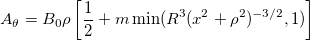
Note: in the limit  , B inside approaches 3 B0.
, B inside approaches 3 B0.
Theory - Permeable Cylinder in Uniform Field (mu_cylinder_2dp.iob)
An infinitely long cylinder of permeability μ1 is immersed in a medium μ2 containing an otherwise uniform magnetic field
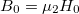
transverse (+x) to the cylinder axis (z).The magnetic field inside the cylinder is uniform, as follows:
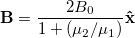
The magnetic field outside the cylinder is
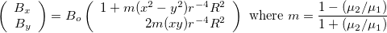
The magnetic scalar potential [2] is
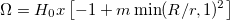
The magnetic vector potential is
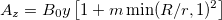
Note: in the limit
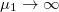
, B inside approaches 2 B0 inside the sphere.Theory - Permeable Torus in Uniform Field (mu_torus_3dp.iob)
This example calculates the B-field due to a permeable torus inside an otherwise uniform magnetic field.
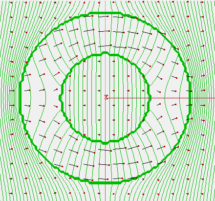
Figure: Permeable torus in otherwise uniform magnetic field. Shown are B-field vectors in a z=0 cross-section (+Z3D). Magnetic scalar potential contour lines are also shown.
As seen, the B-field is stronger inside the permeable material, and the B-field bends through the torus. This example is not validated quantitatively.
Theory - Permeable Cylinder with Current in Uniform Field (mucurrent_cylinder_2dp.iob
The magnetic vector potential is
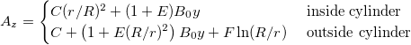
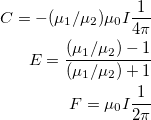
The magnetic field is
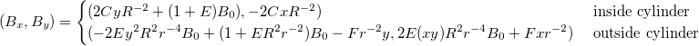
Theory - C magnet (c_magnet_2dp.iob)
This system consists of a "core" of permeable material in the shape of a "C" (see figure below). One or more coils of current are wrapped around the neck of the C, thereby generating a magnetic field along the C shaped curve, and this field continues through the air gap between the two end tips of the C. In this simulation, assuming the magnet is long in the direction perpendicular to the C surface, we approximate using 2D planar symmetry. y mirroring is also used. Since most flux goes through the core or around the air gap, negligible flux will pass through the top boundary, which we therefore assign a Dirichlet boundary condition (Az=0), defined here by electrode (Dirichlet) points of 0 value in the Az boundary definition (c_magnet_2dp-Az.gem). Due to symmetry and non-zero flux on the y=0 mirror plane, this should be treated as a Neumann boundary. Neumann boundaries are assumed by SIMION when the edge of the array uses non-electrode points (as also done in c_magnet_2dp-Az.gem). The current density (z component only) and material permeability are defined in c_magnet_2dp-jz.gem and c_magnet_2dp-mu.gem respectively and are rescaled in c_magnet_2dp.lua.
A quick approximation of the expected field can be obtained by Ampere's law,
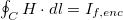
given the free current If,enc enclosed in the curve. Integrating over a box shaped curve with corners at the purple points in the below figure (just inside the magnet), we find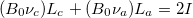
, where Lc is the length of the part of the curve through the magnetic core ("c") material and La is the length of the part of the curve through the air ("a") gap region, and we approximate the magnetic field as a constant B0 parallel to the curve. There are two (2) coils due to y mirroring, causing the 2 coefficient on the I, where I is the current in each coil times the number of turns in the coil. This implies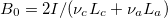
approximately. The SIMION calculation provides more realistic value for B accounding for fringe field effects in the air gap and which is not constant.This example assumes the core material is soft (B and H having a direct relationship, independent of history), linear (i.e. μ = B/H is a constant, independent of B) and isotropic (μ independent of direction) with μr = μ/μ0 = 1000. Non-linear core material would require iterations, analogous to treatment of non-linear dielectrics (in Dielectric examples).
See also Wikipedia:Magnetic_core.
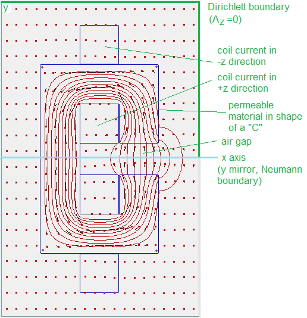
Figure: XY planar cross section of C magnet. Field lines (along constant Az) are in red, and also show field vectors.
Theory - Converting B-field Vectors to Magnetic Scalar Potential PA (spotential_from_bfield.iob)
This takes a B-field (here defined analytically but could be defined in arrays) and converts it to magnetic scalar potential (Ω) for storage in a magnetic PA. It uses the "simion.experimental.spotential_from_vfield" function described later below. Mathematically, these are related by B = μ H and H = - grad Ω as described in Doc(magnetic_potential).
Theory - Uniformly Magnetized Cylinder (mag_cylinder_2dc.iob)
In this example, we find the B-field of a cylinder of permanent magnet material with
uniform magnetization M0 inside (with M0
parallel to the cylinder axis).
It is modeled in 2D cylindrical symmetry.
Note that
div B = 0,
B = μ0(H + M), and
- grad ΩH = H imply
div grad ΩH = (div M).
The latter is a Poisson equation,
which can be solved with Refine if div M
and boundary conditions for ΩH are known.
For a uniformly magnetized cylinder,
div M is zero everywhere except the cylinder bases, where it would be
d Mx / dx, but this is undefined since Mx changes abruptly
between M0,x and 0 at the bases.
To avoid an undefined div M,
we instead treat M as gradually changing over 2 grid units: one grid unit on each
side of the base.
In that case, div M = d Mx / dx = ± M0 / (2 gu)
within the 2 gu region around each base.
As boundary conditions, we set ΩH = 0 (i.e. no flux through boundary surface)
at a sufficient distance away from the magnetized cylinder.
Once ΩH is solved (Refined), we can find H via
- grad ΩH = H.
We can then utilize the relation B = μ0(H + M)
to find B since M is known.
The adjustable variable update_m controls whether this M is
incoporated as a vector (update_m = 0) or (earlier) as a scalar potential
(update_m = 1).
update_m = 0 is safer since M cannot be expressed uniquely as a scalar
potential throughout the entire volume.
Below shows a plot of B-field vectors calculated upon clicking Fly'm in the
mag_cylinder_2dc.iob example:
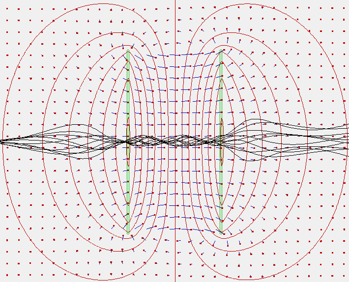
Figure: Magnetic field vectors in uniformly magnetized cylinder (axial cross-section). Two green discs represent the surfaces of the cylinder in which div M is non-zero. The region between the two discs have constant M = 1 A/mm, and for everywhere else M = 0. Contours of the H-field magnetic scalar potential ΩH (i.e. - grad ΩH = H) are shown in red. Particles flown (black) are also shown.
The uniformly magnetized cylinder has the same B-field as an air core solenoid with infinitely thin wires. This is because inside the cylinder, the current loops from M cancel, leaving only a residual current around the lateral side surfaces of the cylinder, which is the same as the current from a solenoid. Therefore, this example also uses the Biot-Savart solver to compute the B-field of an analogous solenoid (like in Example: solenoid), and plots both B-fields overlapped as a check of accuracy. The largest loss in accuracy is on the bases of the cylinders due to the special treatment of M there.
Particles are also flown through the cylinder in this example (as seen in the figure above), just like the analogous Example: solenoid, though this is artificial since particles cannot actually fly unhindered through a magnetic material. But if they could, they would behave like in the air-core solenoid, which has the same B-field.
Theory - Two Coaxial Uniformly Magnetized Cylinders (mag_2cylinder_2dc.iob)
This example is like the previous one but uses two uniformly magnetized cylinders coaxial and oriented in the same direction. This is a simple type of permanent magnet with two pole pieces.
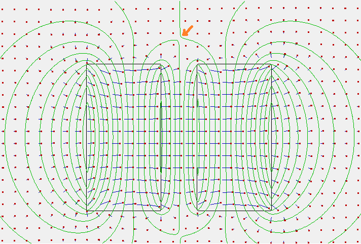
Figure: Axial cross section (XY view). B-fields are shown as blue arrows. Equipotential lines for magnetic scalar potential are shown in green. Note the B-field direction reversal at the top center (location marked with orange arrow).
Note in the above figure that the magnetic scalar potential lines (green), although roughly parallel to the cylinder faces, become increasingly not parallel on the corners and are nearly perpendicular on the lateral sides. Therefore, except to a very rough approximation, it is not the case that this magnet has constant magnetic scalar potential over the entire surface, as might be assumed by modeling this in the way shown in Example: magnet (mag90.iob). Also note the (small) B-field direction reversal (location marked with orange arrow), which does not exist in mag90.iob; this effect increases as the gap between the two pole pieces decreases, and in the limiting case the two pole pieces touch and become one (like in mag_cylinder_2dc.iob).
This system should have exactly the same B-field as an analogous system with two coaxial air-core solenoids. This is confirmed with the Biot-Savart solver, and B-fields are shown overlapped.
Theory - Uniformly magnitized sphere (mag_sphere_2dc.iob)
In this example, we find the B-field of a sphere of permanent magnet material with uniform magnetization M0. It is modeled in 2D cylindrical symmetry, with M0 parallel to the cylindrical axis and sphere radius R. This problem is solved in Griffiths Example 6.1. The field inside the sphere should be B = (2/3)μ0 M. The field outside the sphere should be that of a magnetic dipole, m = (4/3)πR3M0, which is
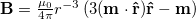
.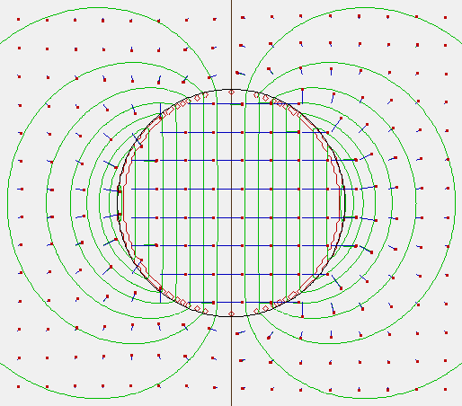
Figure: Magnetic field vectors in uniformly magnetized sphere (black circle). H-field contour lines are also shown (green). Red patches are non-zero div M on the sphere surface.
Theory - Halbach Cylinder (mag_halbach_cylinder_2dp.iob)
This example calculates the magnetic field in a Halbach array, particularly in a cylinder arrangement called a Halbach cylinder (see Wikipedia:Halbach_array). A Halbach array positions a series of permanent magnets in various rotations such that magnetic field on one side of the series is minimized. In ideal form, a Halbach cylinder has magnetization M distributed according to
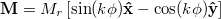
for angle φ around the cylinder. In practice, the cylinder is formed by a finite number of permanent magnets with uniform magnetization.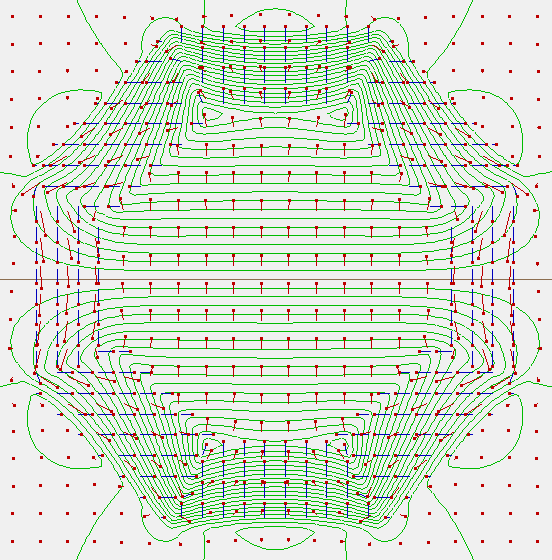
Figure: Halbach cylinder. B-field vectors are shown in red and are fairly uniform in the inner empty region and nearly zero in the outer empty region (and non-uniform in the magnetic region). H-field contour lines are also shown (green). M-field vectors are shown in blue.
In ideal form with k=2, the H-field inside the magnet should be
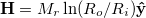
given outer and inner radii Ro and Ri. Here, with Mr = 1 A/mm, that would predict |B| = 5.095 gauss (approx) at the center. The actual calculated value is about 4.75 gauss, but note that this is not an ideal system. If an idealized M is enabled (see .lua file), the calculated value is 4.99 gauss.PA and GEM File Definition
Most of the PA's in these examples should not be refined in the usual way with the Laplace solver. Rather, the PA's representing magnetic potential need to be refined with the Poisson solver, and the Poisson solver needs to be provided any associated PA's representing magnetic permeability and/or current density. Typical usage is seen in mucurrent_cylinder_2dp.lua:
local muinst = simion.wb.instances[1] -- relative permeability
local jzinst = simion.wb.instances[2] -- current density z component (j_z)
local Azinst = simion.wb.instances[3] -- vector potential z component (A_z)
local Azpa = Azinst.pa
local jzpa = jzinst.pa
local mupa = muinst.pa
function segment.initialize_run()
Azpa:refine{potential_type='magnetic[A]', charge=jzpa, permeability=mupa,
convergence=1E-5}
end
The above assumes that there are three PA instances attached to the workbench ("PA Instances" list on the PAs tab on the View screen):
- PA instance #1 represents the relative magnetic permeability.
- PA instance #2 represents the z component of current density.
- PA instance #3 represents the z component of magnetic vector potential.
Note: the L-/L+ buttons on the PAs tab can be used to reorder the PA instance numbers.
In the above example there are no x or y components of current density or magnetic
potential, but if there were you would need additional arrays as seen in the
3D examples (current_sphere_3dp.lua and mu_sphere_3dp.lua).
It's not actually necessary necessary to attach the PA objects to the workbench
in order to refine them, but it's convenient to do so because SIMION will load
them automatically (creating them from GEM files if necessary) when the IOB
is loaded, you can position them on the workbench via the Positioning panel
on the PAs tab, and you can use the standard functions for plotting them.
The PA instances can be accessed via the simion.wb.instances array, and the
corresponding PA objects can obtained from the pa field in the PA instances.
(Note: a PA instance is a projection of a PA object onto the workbench volume,
and multiple PA instances may be associated with the same PA objecta PA object.)
You can invoke the Poisson solver by calling the "refine" method on the
PA object representing magnetic potential, optionally passing it PA's for
current density (charge parameter) and/or relative permeability
(permeability parameter).
Note that normally the Poisson solver assumes you are refining scalar potential
(either electric or magnetic depending on the PA type), but if you need to
refine magnetic vector potential, you must specify an appropriate value in
the potential_type parameter.
See
Doc(simion.pas pa:refine)
for details on parameters for the pa:refine method as well as
Doc(magnetic_potential) for general
notes on magnetic potential.
Treatment of magnetic potential depends on the PA symmetry (2D planar, 2D cylindrical, or
3D).
The "refine" call would normally be placed in an initialize_run, flym, or load segment
(see
Doc(Workbench Program Extensions)
for descriptions of these new segment types).
Most of the GEM files have an underscore in the PA type field in the pa_define
(e.g. magnetic_).
This causes the PA to be marked as not refinable in the usual way:
It prevents SIMION from prompting you to refine the PA with the Laplace solver
when you load the IOB, which otherwise could cause confusion.
This option is described in
Doc(gem_geometry_file).
Observe how GEM files like magnetic permeability and current density are defined:
; mu_sphere_2dc-mu.gem
; Creates relative permeability PA.
pa_define(200,200,1, cylindrical, xy,magnetic_,, 0.5,0.5,0.5) ; 0.5 mm/gu
; First fill all space by default with relative permeability 1.
n(1) {
fill { within { box3d(-1E+6,-1E+6,-1E+6, 1E+6,1E+6,1E+6) } }
}
; Fill a sphere with > 1 constant.
locate(-0.25,-0.25,-0.25) { ; shift down by 1/2 grid unit
n(0.2) { fill { within_inside { sphere(0,0,0, 10) } } }
}
Here, the PA point (x,y,z) stores the relative magnetic permeability for the material in the cell bounded by (x,y,z) to (x+1,y+1,z+1) gu, i.e. centered at (x+0.5,y+0.5,z+0.5) gu. Therefore, the number of points in each dimension is one less than in the magnetic scalar potential PA (in each dimension with more than one grid point). Moreover, for highest accuracy, we should shift the coordinate system down by 1/2 a grid unit so that measurements are take in the centers of the cells. Also, for highest accuracy, we use a "within_inside" (rather than "within") since "within" applies a 1/2 grid unit surface expansion that we don't want here.
Using this demo
- Load current_cylinder_2dp.iob. No refine is necessary on loading since refining will be done later during the Fly'm. Click Fly'm. Fly'm builds the current density array, refines the magnetic vector potential array and does various plotting. Current density vectors are plotted in the center of the screen (these are more easily seen in views other than XY). Both calculated and theoretical B-field vectors around the current are drawn on the screen for comparison (you may need to zoom in on a vector to see the small difference). Calculated and theoretic field magnitudes along a radial line are also displayed in the Log window. Potential contours of the magnetic vector potential (z component) are plotted, and these follow the field vectors. Click User Program on the Particles tab to view the user program.
- The current_sphere_2dc.iob and current_sphere_3dp.iob examples can be run similarly. To assist in viewing, you may want to disable the "Draw" checkbox for the PA instances on the PAs tab in the View screen (so as not to view Dirichlet boundaries). current_sphere_3dp.iob is best viewed in the ZY plane after doing a 3D zoom (+Z3D) in on the X=0 cross section in the XY view. Examine the source code of the Lua files in a text editor for details.
- The mu_cylinder_2dp.iob, mu_sphere_2dc.iob, mu_sphere_3dp.iob, and mucurrent_cylinder_2dp.iob examples can also be run similarly. The coils are outlined in blue and the permeable material in orange. Note the fringe fields near the gap. Note how the Log window compares the calculated field in the gap with a rough estimate of that field based on an Ampere's law approximation, which match pretty closely.
- The c_magnet_2dp.iob can also be run similarly. You may change the adjustable variables (e.g. "gap") and click Fly'm to rerun the simulation under those changes.
- The spotential_from_bfield.iob can be run similarly. Upon clicking Fly'm, an analytically defined B-field is converted to a magnetic scalar potential and stored in a PA (spotential_from_bfield.pa), which can then be expressed back as a B-field and compared against the original B-field by plotting both vector fields, which nearly overlap. Increased fidelity can be obtained by increasing the "N" value in the user program and/or the PA grid density. Click User Program on the Particles tab to view the user program.
Preliminary Field Array API
Utility functions for combining the x, y, and z component PA's for a field, refining them, and extracting fields or curl's from them are currently provided inside the simion.experimental table. These functions are described below. These functions are subject to change.
fa = simion.experimental.field_array{xpa, ypa, zpa, antimirror=antimirror}
Returns an object representing a vector field consisting of the three
provided potential arrays for the x, y, and z components of a vector field.
`antimirror` is a string indicating any antimirror planes and may consist
of any combination of the letters 'x', 'y', and 'z'. The default ''
indicates no anti-mirror planes.
Antimirroring means that the direction of the vector is reversed after
mirroring across the given plane.
Examples:
local Axpa = simion.pas:open 'Ax.pa'
local Aypa = simion.pas:open 'Ay.pa'
local Azpa = simion.pas:open 'Az.pa'
local fa = simion.experimental.field_array {Axpa, Aypa, Azpa}
local fa = simion.experimental.field_array {Axpa, Aypa, Azpa, antimirror='x'}
-- alternative
f = fa:to_field( [painst] )
where vx,vy,vz = f(x,y,z)
Returns a function `f` that can be used to obtain the field vector at
any real valued point (x,y,z) `f` returns (0,0,0) outside of the PA volume.
If `painst` is not passed to `to_field`, then `f` is expected to be passed
PA volume coordinates (in gu). If a PA instance `painst` is passed, then
`f` is expected to be passed workbench coordinates (in mm), and `painst`
will be used to convert between workbench coordinates (in mm) and PA volume
coordinates (in gu).
One convenient use of `f` is to plot fields with the contourlib81 library,
in which case `painst` should be specified.
See magnetic_vector_potential Lua examples for details.
f = fa:curl_field( [painst] )
where vx,vy,vz = f(x,y,z)
This is similar to fa:to_field() but returns a vector that is the curl
of the represented field.
One common application of this function is if `fa` represents a vector
magnetic potential, then `f` will represent the magnetic field since
B = curl A.
fa:refine { . . . }
Refines all three potential arrays in the vector field.
This supports the same parameters as the `simion.pas pa:refine`
function for regular potential arrays. One difference, however, is that
the `charge` field, if provided, must be another vector field object
returned by simion.experimental.field_array.
A typical example is this:
local Afa = simion.experimental.field_array{Axpa, Aypa, Azpa}
-- magnetic vector potential field
local jfa = simion.experimental.field_array{jxpa, jypa, jzpa}
-- current density vector field
Afa:refine { current=jfa, convergence=1e-5 }
-- Poisson solve both together.
fa:save( [filename] )
Saves all three potentials arrays in the vector field.
This is similar to the `simion.pas pa:save` function for regular
potential arrays. It will append 'x', 'y', or 'z' to the base of the
specified `filename`. For example, fa:save('A.pa') will actually
create the files 'Ax.pa', 'Ay.pa', and 'Az.pa'.
simion.experimental.spotential_from_vfield(painst, vfield [, N])
Fills PA instance `painst` with scalar potentials
based on vector field given in `vfield`.
We assume the vector field is the negative gradient of the scalar potential.
If `painst` is electric, representing electric potential (V),
then `vfield` represents the E-field.
If `painst` is magnetic, representing magnetic scalar potential (Ω),
then `vfield` represents the H-field.
`vfield` is a function of the form
vx,vy,vz = vfield(x,y,z)
where (x,y,z) is a point in workbench coordinates (mm).
If `painst` is electric, then `vfield` should be in units of V/mm.
If `painst` is magnetic, then `vfield` should actually be mu_0*H,
which, like B, has units of gauss, and it equals B in the case
mu_r = 1.
Point (0,0,0) is arbitrarily assigned potential 0.
The given vector field must actually be representable in terms
of scalar magnetic potential; otherwise, results will be
nonsensical. In particular, if the PA instance is magnetic,
the volume of the PA should not contain currents, or at
least currents significant enough to generate magnetic fields.
If you have currents, you may break up your PA into smaller
PAs that are current free.
This function is similar to the `pa field` field setting
function in the older SL Libraries
and the "Text to PA" function in sl_tools.
This is a rudimentary line integration based on the trapezoidal rule,
though it averages over multiple paths (x, y, and z directions) to
improve accuracy.
N is the number of steps per grid point in the integration.
The default (if omitted) is 1. Higher values increase accuracy.
See Also
- Example: Poisson
- [1] D. Griffiths. Introduction to Electrodynamics, 3rd Edition. Addison Wesley, 1999.
- [2] J. Cochran and B. Heinrich. Applications of Maxwell’s Equations. Simon Fraser University. 2004. Chap. 5. [link]